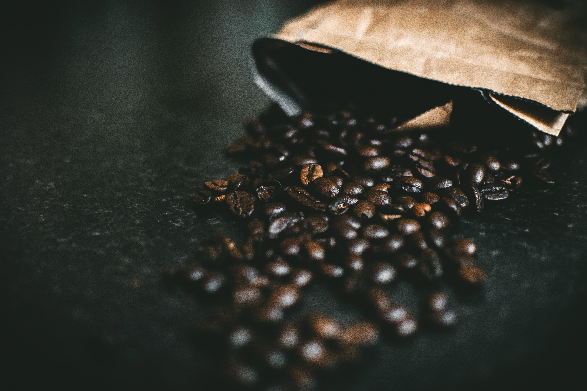

Coffee flavors
Coffee comes in alot of different types and flavors.
Different types of coffees
Caffé Americano
You can make this type of coffee quite simply by adding hot water to a shot of espresso coffee. It has been said that American soldiers during the Second World War would make this type of coffee to make their beverages last longer. It was then (apparently) adopted by American baristas after the war.
Café Latte (or Café au lait)
A fairly popular option for coffee drinkers, a latte consists steamed (or scolded) milk and a single shot of coffee. It is usually quite frothy, and you’ll occasionally encounter cafes that don’t understand the difference between this and a flat white.
Cappuccino
Possibly the most popular type of coffee in the world, a cappuccino consists of three layers (kind of like a cake). The first is a shot of espresso, then a shot of steamed milk, and finally the barista adds a layer of frothed, foamy milk. This final layer can also be topped with chocolate shavings or powder. Traditionally, Italians would consume this type of coffee at breakfast.
Espresso
To make an espresso, shoot boiling water under high pressure through finely ground up coffee beans and then pour into a tiny mug. Sounds simple right? Well, it’s surprisingly difficult to master. Espressos are the purest coffee experience you can get, and while they’re not for everyone, it can be a truly singular drinking experience when you find a good brew.
Macchiato (also known as a Piccolo Latte)
A macchiato is a shot of espresso which is then topped off with foamed milk dashed directly into the cup. Although it may sound similar to a cappuccino, it’s usually stronger as there’s no steamed milk added and it’s also smaller, usually served in an expresso sized cup.
Irish Coffee
Too many of these and you might have to ‘just crash here, bro’, because this type of coffee is brewed with whiskey, sugar, and a thick layer of cream on the top – and isn’t readily available in New Zealand Café’s due to its alcohol content, they’re more often found in restaurants. Be warned that trying to make this with scotch and instant coffee doesn’t work… trust us.
Filtered Coffee
Filtered coffee is